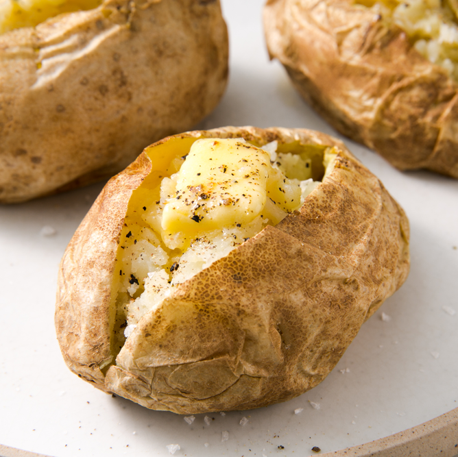

Microwaved baked-potato

Baked Potatoes are a staple in any meal!
A baked potato, is a preparation of the potato. The ideal baked potato has a fluffy interior and crispy skin. It amy be served with fillings.
Some Varieties of potatoes are more suitable for baking than others, owing to their size and consistency!
Ingredients
1 tablespoon butter or margarine
3 tablespoons shredded Cheddar cheese
Scrub the potato, and prick several time with the tines of a fork. Place on a plate.
Cook on full power in the microwave for 5 minutes. Turn over, and continue to cook for 5 more minutes. When potato is soft,
remove from the microwave, and cut in half lenghtwise. Season with salt and pepper, a nd mush up insides then add cheese and sour cream.